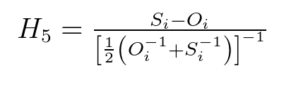
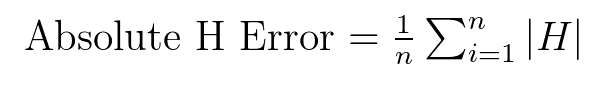

h5_mahe¶
-
HydroErr.HydroErr.h5_mahe(simulated_array, observed_array, replace_nan=None, replace_inf=None, remove_neg=False, remove_zero=False)¶ Compute the H5 mean absolute error.
 Range:
Notes:
Parameters: - simulated_array (one dimensional ndarray) – An array of simulated data from the time series.
- observed_array (one dimensional ndarray) – An array of observed data from the time series.
- replace_nan (float, optional) – If given, indicates which value to replace NaN values with in the two arrays. If None, when a NaN value is found at the i-th position in the observed OR simulated array, the i-th value of the observed and simulated array are removed before the computation.
- replace_inf (float, optional) – If given, indicates which value to replace Inf values with in the two arrays. If None, when an inf value is found at the i-th position in the observed OR simulated array, the i-th value of the observed and simulated array are removed before the computation.
- remove_neg (boolean, optional) – If True, when a negative value is found at the i-th position in the observed OR simulated array, the i-th value of the observed AND simulated array are removed before the computation.
- remove_zero (boolean, optional) – If true, when a zero value is found at the i-th position in the observed OR simulated array, the i-th value of the observed AND simulated array are removed before the computation.
Returns: The mean absolute H5 error.
Return type: Examples
>>> import HydroErr as he >>> import numpy as np
>>> sim = np.array([5, 7, 9, 2, 4.5, 6.7]) >>> obs = np.array([4.7, 6, 10, 2.5, 4, 7]) >>> he.h5_mahe(sim, obs) 0.11818409010335018
References
- Tornquist, L., Vartia, P., Vartia, Y.O., 1985. How Should Relative Changes be Measured? The American Statistician 43-46.